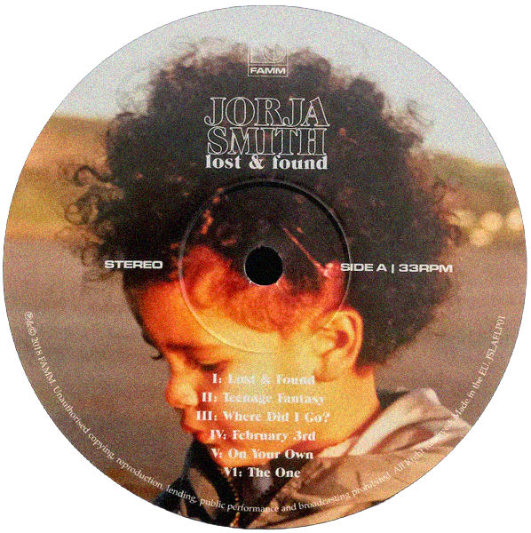

Music is a really big part of my life, I can say this with confidence as my Spotify wrapped showed that I've listened to 61,490 minutes of music last year. This being said, the music I listen to on a particular day, week, month, tends to be very reflective of what I'm feeling, and it helps me navigate my emotions better. The weather was truly truly horrendous this week, with warnings of coastal floods, torrential downpour, and wind harrassing every pedestrian. My mood this week was devastating due to the sudden change of weather, and the chilly air led me to seek solace in Jorja Smith. Jorja Smith has one of the most stunning yet soothing voices, in my opinion, but there's a rawness and somber tone to it that makes her songs perfect to listen to, in weather as horrid as such. This particular album has some of my favourite songs from her, such as "The One", "Lost & Found", and "February 3rd". You should listen to it sometime. ⠀⠀⠀. . ﾟ . . ✦ ,. *.. . ✦⠀ , *,